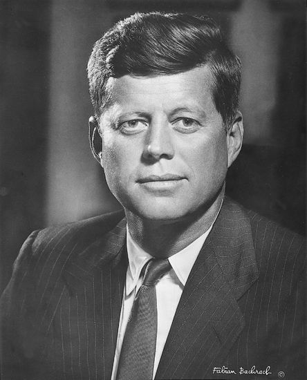

Chương 4

ả gia đình Kennedy lại quay hướng nhìn sang người con trai thứ hai, John Fitzgerald Kennedy.

Sau khi người anh chết, người con trai kế này có thấp sự muốn tham dự vào cuộc đua để trở thành Tổng thống? Cá nhân tôi hồ nghi việc này. Ông ta là một tác giả đã có tác phẩm khá hay xuất bản. Và đang bắt đầu trở thành một nhà tư tưởng chính trị có tương lai. Ông đã bước ra ngoài khu rừng đời sống chằng chịt của một gia đình lớn. "Khu rừng Kennedy trù mật và dày đặc, đó là điểm cần phải ghi nhớ nếu muốn trở thành dâu con của gia đình này, bạn sẽ bị bận rộn với một người có những hoạt động của một người khác" Eunice Shriver một lần đã nói như vậy.
Trong một cuộc phỏng vấn, chính Joseph Patrick tuyên bố: "Tôi sẽ đẩy Jack vào con đường chính trị. Tôi nhất quyết. Tôi đã nói với nó là Joe đã chết, vì thế nó phải nhận lãnh trách nhiệm này. Nó không muốn, vì cảm thấy không có khả năng. Nó khăng khăng với lý do này. Nhưng tôi nói với nó là tôi bắt buộc nó phải chọn."
Tôi cho rằng trường hợp đã khiến Jack Kennedy, luôn luôn mộng mơ một đời sống khác, một đời sống yên tĩnh hơn, với các quyển sách, với bạn bè và với gia đình, dĩ nhiên, mộng mơ ấy có tính cách trường cửu và phù hợp với tuổi đời chồng chất sau này.
Nhưng, người con trai thứ hai này không ngừng lại được. Ông đã tiến thật nhanh, với sự thúc đẩy của người cha. Ông được đề cập đến chức vụ Thống đốc của tiểu bang Massachusetts. Nhưng chức vụ này chưa đủ làm cha ông bằng lòng. Người cha muốn ông phải vào Bạch ốc, xuyên qua Thượng viện. Lúc ấy ông đã là một dân biểu, nhưng muốn trở thành Thượng nghị sĩ ông phải hạ Heny Cabot Lodge, Jr.
Tức khắc, ông bắt đầu tự đánh bóng để cho ai ai cũng biết đến tên John F.Kennedy, bằng cách xuất hiện mọi nơi trong tiểu bang Massachusetts. Suốt ba năm liên tiếp, ông không chinh phục được ai, mặc dù phía sau ông có: "Gia đình không bị ai chinh phục được". Một đại gia đình thật sự không sợ thảm bại đến với nó. Quả đấm giáng xuống, nó nhận lãnh, hút lấy, và hoà giải, biến quá đấm thành năng lực mới. Yếu sức sẽ không làm sao hoá giải được, bởi không thể tập trung sức mạnh. Không sợ hãi là kết quả của sự phẫn nộ và chỉ có sức mạnh mới phẫn nộ đủ để đương đầu, ngay cả với đấng tối cao. Những người mang họ Kennedy đủ sức mạnh để chấp nhận, đủ sức mạnh để phẫn nộ được, đủ sức mạnh để sử dụng sự phẫn nộ của họ, để đi đến một bước khác hướng đến mục tiêu đã chọn cho đến khi đạt được quyền lực mới thôi.
Như tôi, qua sự tìm hiểu từng cá nhân của gia đình luôn luôn gây kinh ngạc này, tôi nhận thấy quyền lực đối với họ là mục tiêu liên tục, không thể cải đổi được, phải làm bất kỳ cách nào để đạt đến. Những người trong gia đình Kennedy cũng đã tin tưởng một cách thật thà rằng họ không phải muốn đeo đuổi quyền lực mà họ có khả năng sử dụng quyền lực để tạo nên sự thiện mỹ. Vì vậy như một bắt buộc tinh thần, họ phải cố đeo đuổi và nắm lấy quyền lực. Người cha của gia đình đó tin tưởng biện thuyết này mãnh liệt hơn ai hết và dạy các con trai của ông cũng phải tin tưởng như ông. Tuy nhiên, ông cũng đủ hiểu rằng, ở Hoa Kỳ, tiền bạc là căn bản để tạo ra quyền lực.
Ông dạy các con cách sử dụng tiền bạc. Ông làm việc để cho các con tiền bạc, để họ làm phương tiện tìm kiếm quyền lực. Súng ống chỉ được sử dụng để cướp lấy quyền lực tại các xứ không dân chủ. Tại các xứ dân chủ tiền bạc thay thế cho súng ống.
Khi John F. Kennedy chạy đuổi theo quyền lực, ráo riết nhất, gia đình của ông tràn ngập tiền bạc. Hàng triệu đô la đổ xô đến. Joseph P.Kennedy, dĩ nhiên, lúc ấy được xem là một trong những người tự lập giàu nhất thế giới.
Lập tức, kế hoạch nhằm giúp John nắm quyền lực trong tay được đặt ra. Toàn thể gia đình hợp quần phía sau kế hoạch đó. Dù cho thời gian này mọi hoạt động Eisenhower lan rộng khắp nơi, John F.Kennedy vẫn tuyên bố rằng ông sẽ là một ứng cử viên Thượng viện của tiểu bang Massachusetts.
Khi con đánh bại Lodge, con sẽ có được tất cả những gì tốt đẹp nhất. Đừng cố gắng vào những việc không đáng! Người cha đã nói như vậy. Giống như một câu hô hào xưa cũ trước khi lâm trận: Nếu bạn tham dự vào một cách chiến đấu nào, bạn phải thắng,và thắng ở hàng đầu.
Toàn thể gia đình đó đã đáp lại câu hô hào này.
Để lâm trận, những người đàn bà, luôn luôn như vậy, theo sau những người đàn ông của họ.
"Dùng tiệc trà Kennedy", "Dùng cà phê với những người Kennedy" và các cô con gái mang họ Kennedy đi hết nhà này sang nhà khác, những cô gái đẹp đẽ dễ yêu đó, với tất cả sự tao nhã, tự tin của họ, mà khi nhìn đến người ta sẽ hiểu tư thế của gia đình họ như thế nào.
Ngay cả người mẹ, Rose Kennedy, cũng tham gia vận động, và với tư cách một bà mẹ cũng như phu nhân của một vị cựu Đại sứ và con gái của nguyên một chính trị gia lỗi lạc ở Boston, bà thăm viếng các bà mẹ, bà vợ người Ý, và bà đủ kiến thức để thỉnh thoảng nói về quê hương của họ. Tóm lại, những người Kennedy hiện diện khắp nơi, nhằm làm tiêu tan sự chống đối hướng vào Jack. Một người đã kêu lên: Trời ơi! Sao mà nơi nào cũng có một Kennedy hết vậy!
Tuy nhiên, hai phương diện khác của cuộc vận động đã làm tôi xúc động, hơn cả sự thành công vượt bậc của nó. Phương diện đầu tiên, cho thấy năng lực phục hồi của một gia đình có nền tảng tốt. Cá nhân và toàn thể họ, không thế nào bị đánh bại. Khi một người nằm xuống, những người khác càng sát cánh nhau hơn và mục tiêu được đặt trở lại lập tức, để theo đuổi một cách ráo riết hơn.
Phương diện thứ hai, sức mạnh thành công tiềm ẩn của những gia đình như thế, là nhờ khả năng hợp quần của họ trở thành một. Dĩ nhiên, một đại gia đình làm gì không có những chia rẽ, những ganh đua cá nhân. Nhưng chẳng ai bên ngoài biết được những điều đó. Một gia đình lớn luôn luôn đi kèm với một sự hợp tác triệt để. Kết hợp lại, họ đứng vững và sẽ đứng vững. Dù một hôm nào họ chỉ còn lại hai người, họ cũng sẽ sát cánh nhau. Đặc tính này cũng được xem là sự thuỷ chung, một sức nặng tiềm ẩn khác của một gia đình lớn, và gia đình Kennedy có sự tiềm ẩn đó.
Nếu gia đình này vẫn giữ vững như vậy, dù trải qua thế hệ mới, nó sẽ là một sức mạnh lâu bền của xứ sở Hoa Kỳ.
° ° °
Như mọi người đều có thể nhìn thấy, những người đàn bà trong gia đình phấn đấu này: đã duy trì sự vững bền của họ phía sau những người đàn ông. Họ là một khối duy nhất. Đầy đủ nghĩa cá nhân, cương quyết và đôi khi tự do nữa, nhưng chính họ đã xem họ như là những người đàn bà, như là những thành phần, thuộc về gia đình. Mỗi người góp thêm các tài năng riêng của họ vào khung cảnh gia đình, nhưng họ luôn luôn đứng trong vòng lịch duyệt của gia đình.
Dĩ nhiên, người đàn bà liên kết ít nhất với gia đình này là Jacqueline Bouvier. Tôi không biết nàng có đi đến hôn nhân với John Kennedy hay không, nếu ông không có viễn ảnh trở thành tổng thống của Hoa kỳ. Đó chỉ là tin đồn, không thể đặt thành vấn đề ra đây. Trong khi có những điều tốt đẹp xảy ra quanh gia đình này, tất cả cái riêng tư nhỏ nhặt như thế, dù có thể xảy ra, cũng nên gác qua một bên.
Khi những người con trai kết hôn, những người vợ của họ trở thành một bộ phận nằm trong gia đình Kennedy, giống như các cô dâu của một xứ Trung Hoa cổ, của một gia đình Kung chẳng hạn. Cả gia đình đã nhận các phần tử mới này như một lẽ đương nhiên.
Vào năm 1950, Robert Kennedy, (Bobby), cũng như gia đình ông, hầu hết mọi nơi trên thế giới đều biết tiếng, kết hôn với Ethel Skakel và năm 1953 Jonh Kennedy, bấy giờ được xem như là người con trưởng trong gia đình có bổn phận dẫn dắt đàn em của ông, kết hôn với Jacqueline Bouvier.
Jacqueline, ngoài sắc đẹp ra, còn có một ý chí cương quyết và có nhiều điểm ngẫu nhiên trùng hợp với tính tình của cha chồng nàng, nhất là sự quyết liệt của nàng đã đưa đến một vài xung khắc. Tuy nhiên con ó già nua này lại thích những người ưa phẫn nộ, nên sau khi xảy ra các va chạm ông lập tức cười xoà.
Thập niên 1950 (từ 1950 đến 1959) là những năm chia rẽ chính trị trầm trọng ở Trung Hoa. Tôi không hiểu những gì sẽ xảy ra, nếu không có cuộc cách mạng dứt khoát xoá bỏ kiến trúc cầm quyền lỗi thời của xứ ấy để cuối cùng Trung Hoa có hai chính phủ cách mạng, một Quốc gia và một Cộng sản.
Hai trong các người con trai của gia đình Kung một người theo Quốc gia và một người theo Cộng sản, và vì vậy gia đình này đã chia làm hai, đưa đến xung khắc và căm hận lẫn nhau, và từ đó gia đình này đã tự thu nhỏ kích thước của nó. Ngay cả người cha: ông Kung, cũng không làm gì trước nhưng sóng gió mới mẻ này.
Trong khi đó, sự chia rẽ không hề có trong gia đình Kennedy, họ vẫn một mực thuỷ chung. Cha mẹ của họ là trung tâm của sự chung thuỷ đó. Chỉ những người được gia đình khuyến khích mới chọn lấy lối riêng của họ.
Vì vậy John Kennedy, được yểm trợ hết lòng, đã phát triển những xét đoán, sắp xếp kế hoạch và điều khiển vận mệnh bằng năng lực riêng của mình.
Và cũng vì vậy, cuối cùng ông quyết định chạy đua vào toà Bạch ốc, và dù cho luôn luôn hội ý với cha của ông, cũng chỉ có tính cách tìm sự khuyên nhủ. Ông có toàn quyền nghe theo hay bác bỏ sau đó.
Người cha đã khôn ngoan để hiểu tư thế thành công của con trai ông. Con trai của ông hiện đã là một người lớn, ông rút lui ra khỏi khung cảnh và chỉ duy trì sự liên lạc ở một khoảng cách xa. Khi con trai cửa ông đắc cử, chính ông là người rút lui trong giây phút vui mừng đầu tiên của sự chiến thắng. Nhìn lại, thấy vắng cha, vị Tống thống trẻ tuổi đã hối hả trở về gia đình, và cả hai cha con cùng trở lại để ra mắt báo chí.
Một sự vắng mặt đầy ý nghĩa. Ông Joseph Kennedy muốn thế giới biết rằng bây giờ con trai của ông đã hoàn toàn làm chủ lấy mình và không hề có những cản trở phía sau trong toà Bạch ốc nữa.
Sự rút lui kiên quyết ấy, cũng biểu tỏ niềm sung sướng tột cùng của ông: ông mãn nguyện với lòng tin hoàn toàn mà ông đã đặt cả vào các con trai của ông.
Lòong tin này chứng tỏ rõ rệt, khi John bổ nhiệm Bobby vào chức vụ Bộ trưởng Tư pháp, ông nói: "Trong chức vụ này may mắn cho Jack là có Bobby. Nó sẽ trở thành một Bộ trưởng Tư pháp tuyệt hảo. Trong quá khứ rất ít Bộ trưởng Tư pháp có kinh nghiệm toà án bằng Bobby, cũng rất ít Bộ trưởng Tư pháp có khả năng của một nhà tổ chức như nó."
Ông chế nhạo những tố cáo gia đình trị được tung ra. Ông nói: Con trai của Joseph Kennedy tại sao lại phải cần một việc làm. Và mặc dù vợ chồng ông có đến Hoa Thịnh Đốn tham dự ngày lễ nhậm chức của John F. Kennedy, họ đã tuyên bố là sẽ không sống ở thủ đô này hoặc một nơi nào gần đó. Và họ đã giữ lời.
Tuy nhiên, thảm kịch luôn chực chờ giáng xuống gia đình Kennedy sau một thành công lớn. Người cha đang ở tột đỉnh của thành công và vinh quang, và vào lúc mà sức khoẻ của ông rất sung mãn, ông đã nhận lãnh một cú đấm.
Đó là mùa Giáng sinh năm 1961, gia đình tụ họp tại khu đồn điền rộng lớn ở Palm Beach. Ngày đó trời rất đẹp, Joseph Kennedy quyết định đi đánh gôn. Đang chơi, bất thần cảm thấy khó chịu, ông leo lên xe hơi về nhà. Ông từ chối gọi bác sĩ và định vào phòng để nằm nghỉ thì thình lình ông ngã gục giữa lối đi.
Tại bệnh viện, cú đấm đó được cho biết không lấy gì trầm trọng, nhưng cũng vừa đủ khiến ông tê liệt thân bên phải. Và, thay đổi lớn nhất của gia đình, sự yên lặng của nghị lực không còn được giữ nữa. Mọi người vội vã quây quần bên cạnh người cha và cùng cầu nguyện.
Một ngày trước lễ Giáng sinh, ông phải sử dụng máy tiếp dưỡng khí. Một tuần sau ông bắt đầu khá hơn, nhưng không bao giờ trở lại như xưa nữa. John Fitzgerald Kennedy, tân Tổng thống của Hoa Kỳ, lại đảm nhiệm thêm một chức vụ nữa: cầm đầu gia đình Kennedy.